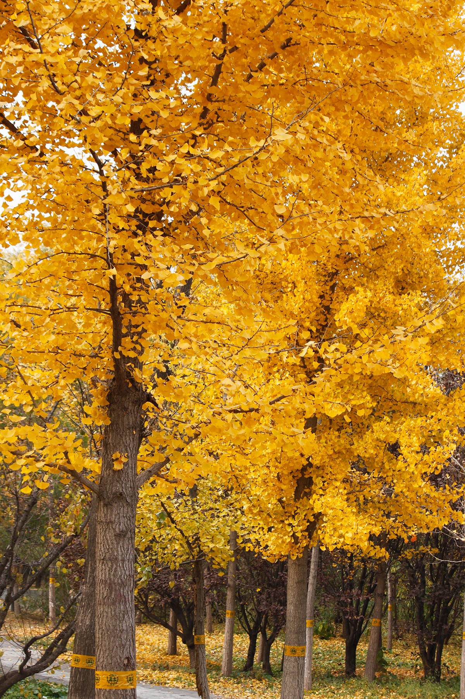
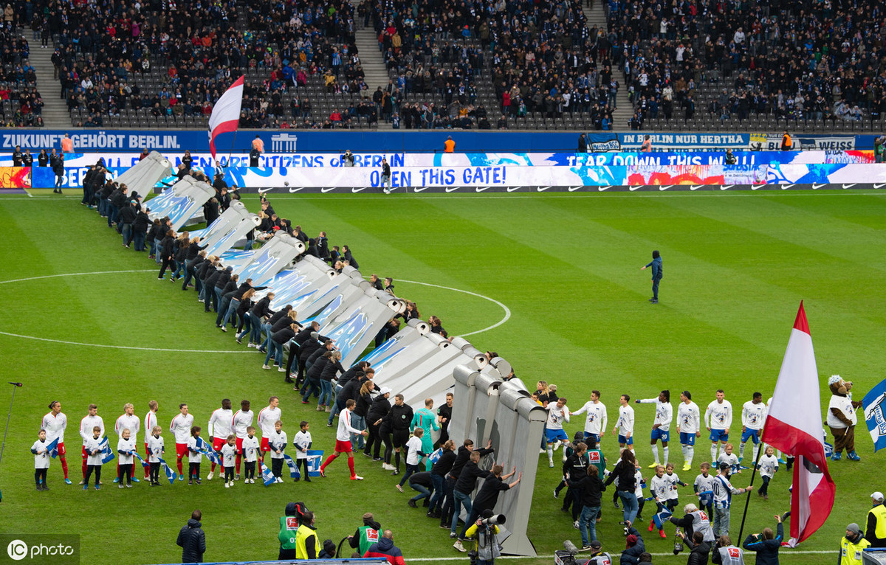
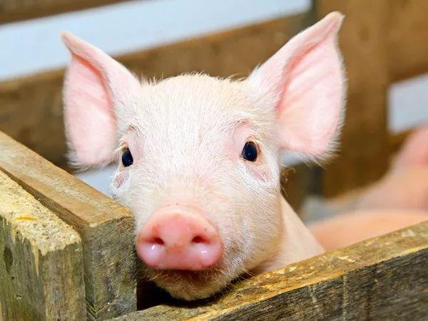
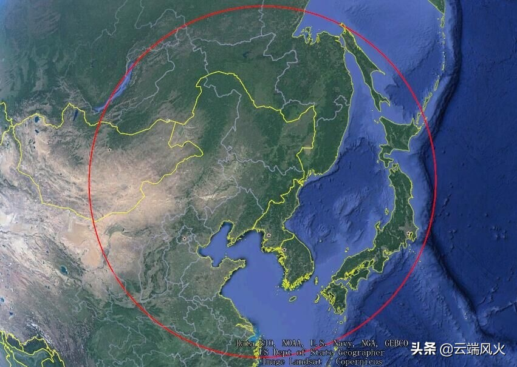

|
图片
|
新闻网 |
|  | 秋天最美的颜色银杏印象 秋风拂过，银杏渐黄，阳光透过银杏叶的缝隙洒在地上，美极了，在秋天来临之际，银杏仿佛在用它那最金黄的颜色向秋天致敬，让寻美的人捕捉到最美的城市色彩。 |
|  | 足球场上一起把墙推倒，德甲赛前举行柏林墙倒塌30周年纪念仪式当地时间2019年11月9日，德国柏林，19/20赛季德甲第11轮：柏林赫塔VS莱比锡RB，赛前举行柏林墙倒塌30周年纪念仪式。 |
中国女排国家队队长，著名女子排球运动员朱婷（1994年11月29日-），出生于河南省周口市，中国女子排球运动员，司职主攻，现效力于天津女排。 她于2013年正式入选国家女子排球队并被重点培养，是90后国家队主力球员“朱袁张”中的一员。2014年起她连夺多个国际重要赛事的最有价值球员及个人奖项，在里约奥运会上帮助中国女排夺得金牌，是FIVB历史上夺得最多正规世界赛MVP的运动员，其表现多次获国际排联表扬，被认为是国际排坛巨星之一。 |
|
中央广播电视总台2019主持人大赛《中央广播电视总台2019主持人大赛》是中央广播电视总台成立后推出的第一个电视大赛，也是集合了总台优势制作和传播资源推出的一个创新型融媒体产品，于2019年10月26日在央视一套开播。 大赛旨在为优秀主持人搭建一个顶级的展示平台，为中国广播电视事业输送全媒体、全球化、复合型主持人才，注重考查选手的综合素养，60名选手分为新闻类和文艺类两组进行角逐。 |
|
香港回归香港回归是指中华人民共和国政府决定在1997年7月1日对香港恢复行使主权，大不列颠及北爱尔兰联合王国政府于1997年7月1日将香港交还给中华人民共和国的历史事件。 |
|
上午成交近两千亿 双十一或为阿里赴港造势截至11月11日上午12:00，阿里半天成交额已超过1845亿元，打破2017年天猫双十一全天记录。而更值得注意的是，此前赴港搁浅的阿里有望在11月的最后一周发行香港股票，筹资在100亿至150亿美元。 |
|
汤圆据传，汤圆起源于宋朝。当时明州（现浙江省宁波市）兴起吃一种新奇食品，即用黑芝麻、猪油做馅、加入少许白砂糖，外面用糯米粉搓成球，煮熟后，吃起来香甜可口，饶有风趣。因为这种糯米球煮在锅里又浮又沉，所以它最早叫“浮元子”，后来有的地区把“浮元子”改称元宵。 据说元宵象征合家团圆更美好，吃元宵意味新的一年合家幸福、团团圆圆，所以正月十五元宵必备。 |
|
|  | 肉猪左右未来半年物价2019年11月11日，全国生猪三大品系继续下跌，多省跌幅超过一元，年底有望回归到15元一斤猪肉的水平！今日，生猪（外三元）全国平均价格为37.19元/公斤，较昨日下跌0.99元/公斤；生猪（内三元）价格为35.91元/公斤，较昨日下跌1.03/公斤；生猪（土杂猪）价格为35.21元/公斤，较昨日下跌1.14元/公斤；玉米价格为1994元/吨，每吨下跌7元；豆粕价格为3206元/吨，每吨上涨9元。今日猪粮比为18.65:1。 |
|  | 东风-17能打多远？可以看到如果布置在我国的东部地区直接可以覆盖到美国构建的第一岛链的中部地区;如果在海南部署，可以覆盖整个中南半岛与南海地区，以及马来半岛与菲律宾群岛部分地区;如果在云南西部署，可以覆盖整个中南半岛、孟加拉湾、安达曼海北部与印度东部地区;如果在西藏东部部署，可以覆盖到印度中北部地区;如果在西藏西部部署，可以覆盖到印度西部地区与阿拉伯海部分地区。 |